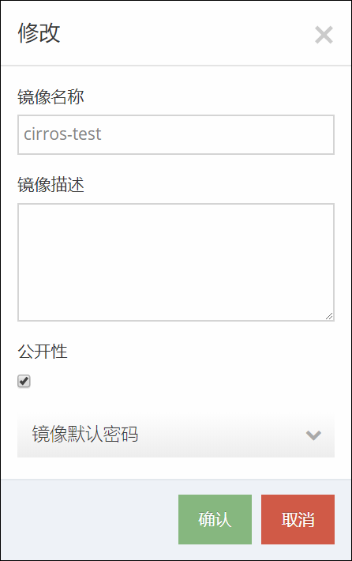
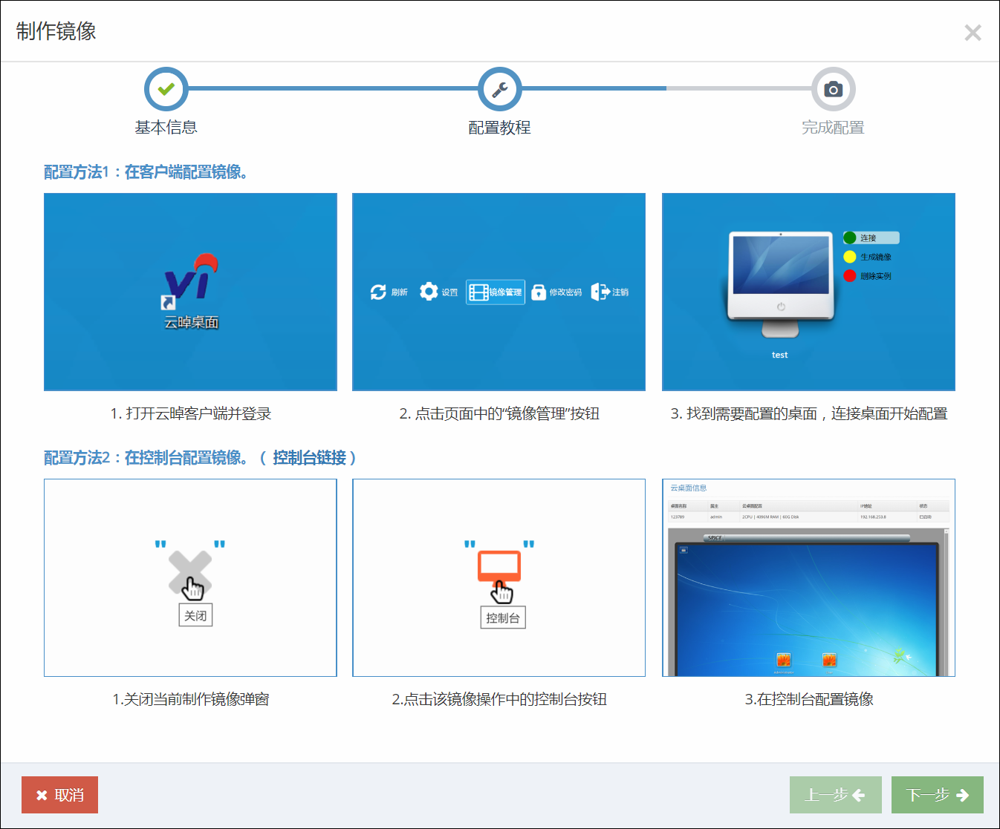
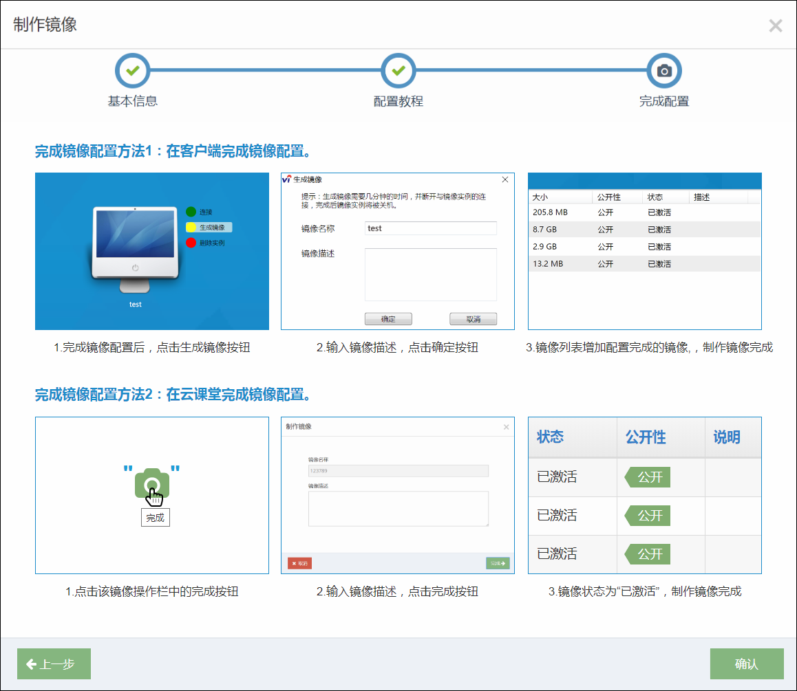

7.镜像管理¶
镜像，是指云桌面所运行的操作系统及其集合的软件、应用等整体环境，类比于传统计算机安装操作系统时，所使用的系统安装光盘，但是该光盘进行过特殊定制，例如安装专门的软件或者配置一定的系统环境。
例如，一个镜像中，其操作系统是windows 7，并装有Office软件。如果选择该模板创建出100台云桌面，则每个云桌面都具有相同的系统环境和软件，即都是windows 7系统，并装有0ffice软件。
7.1.镜像列表¶
在 <镜像列表> 页面中，用户可以查看镜像存储情况的进度条（百分比）以及 已使用/全部 的镜像存储量，镜像存储情况进度条会根据镜像存储使用量显示不用的颜色，用户可以根据镜像存储情况来灵活制作镜像。
镜像列表中可以查看管理系统中所有的镜像，这些镜像一部分是系统自带的没有修改过的镜像，一部分是管理员进行配置后保存的镜像。
用户可以通过镜像名称来分辨他们，也可以通过镜像说明查看镜像的详细情况（镜像说明相当于镜像备忘录，管理员可以在其中填写镜像的详细情况）。

图7-1 镜像列表界面
7.1.1.编辑镜像¶
在镜像管理的界面中，点击镜像列表中要编辑的镜像操作栏中的 【编辑】 按钮，系统会弹出 <修改> 窗口。
管理员可以编辑 镜像名称、添加 镜像描述、改变 公开性，点击 <修改> 窗口的 【确认】 按钮，即可保存镜像属性的编辑。
图7-1-1 编辑镜像弹窗
7.1.2.删除单个镜像¶
7.1.3.批量删除镜像¶
7.1.4.修改镜像账户密码¶
管理员或者教师在创建镜像时，如果修改了镜像账号和密码，需要操作员管理系统中填写该账号密码，点击镜像列表操作中的 【修改】 按钮，点开 镜像默认密码 一栏，输入修改的账号密码。开启桌面时管理系统将该账号密码发送给客户端。如果不填写，则发送系统默认账号密码。

图7-1-4 修改镜像密码
7.2.镜像制作¶
新镜像的制作需要三个步骤，1：创建基本信息；2：配置新镜像；3：填写备注，完成镜像制作。
以下为镜像制作的具体操作步骤：
7.2.1.输入镜像基本信息¶

{kind=link}
{kind=link}
{kind=link}
{kind=link}
{kind=link}
7.2.2.配置镜像¶
当 “正在准备镜像，请稍等…” 成功跳转后，弹窗会显示镜像配置教程。
图7-2-3 配置镜像教程
在镜像配置教程中，有两种方法配置镜像：
配置方法1：在客户端配置镜像。
1、 打开并登录云晫客户端；
2、 点击页面右下角的镜像管理按钮；
3、 找到需要配置镜像的桌面，连接桌面进行镜像配置；
配置方法2：在控制台配置镜像。
1、 关闭当前制作镜像弹窗；
2、 点击该镜像操作中的 【控制台】 按钮；
3、 在控制台进行镜像配置；
图7-2-4 镜像可配置
图7-2-5 控制台配置镜像
{kind=link}
{kind=link}
{kind=link}
7.2.3.完成镜像配置¶
当用户在 <配置教程>**弹窗点击 **【下一步】 按钮后，弹窗将显示完成镜像配置的教程，如图
图7-2-6 完成镜像配置教程
对应镜像配置，完成镜像配置的方法也有两种。
完成镜像配置方法1： 如果用户是在客户端进行镜像配置的，在完后镜像配置后，返回桌面列表，点击 【生成镜像】 按钮，在弹窗中输入镜像描述，点击 【确定】 按钮，镜像列表新增配置完成的镜像，制作镜像操作完成。
完成镜像配置方法2： 用户在控制条配置完镜像后，回到镜像列表页面，点击该镜像操作栏中的 【完成】 按钮，在弹框中输入镜像描述，点击【完成】按钮，此时弹窗会显示 “镜像生成中，请稍等…”，跳转成功后，镜像状态为 “已激活”，制作镜像完成。
{kind=link}